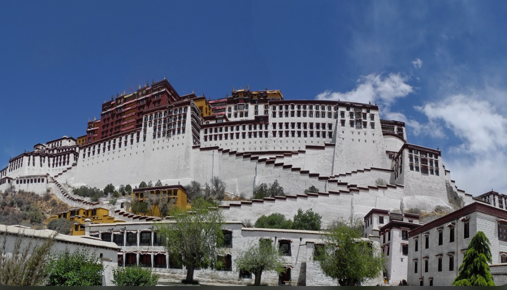

🏯 Lhasa
In the capital of Tibet, Lhasa, a boy named Dorjee was born. Despite his size, he was a hardworking person with sick parents. He sold wood to earn money for his parents every day on the sidewalk, watching cars pass with happy families that he could only at the moment dream of being in. Even though he was poor, attending a university abroad was his lifelong dream and something he kept in mind even through his tough times.